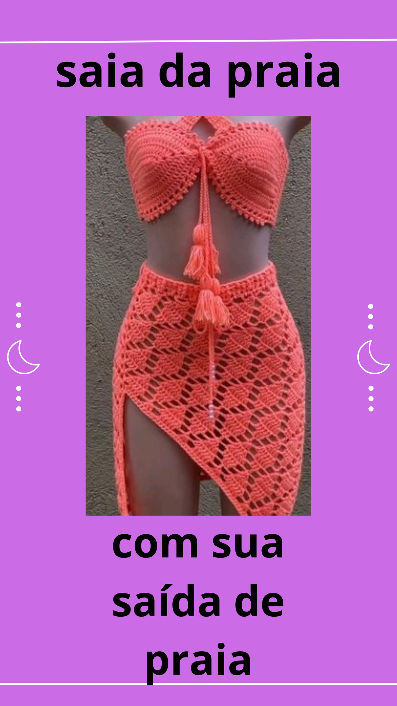

Anúncio piblicitário

Anúncio publicitário é um gênero textual que serve para divulgar produtos, serviços e empresas para determinado público-alvo, estimulando-o a realizar uma ação.
Características do Anúncio Publicitário
As principais caracteristicas do Anúncio Publicitário são:
- Texto persuasivo visando convencimento
- Verbos no imperativo ou presente do Indicativo
- Uso de expressão de chamamento: vocativo
- Linguagem simples, coloquial, dinâmica e acessível
- Presença de criatividade, humor e ironia
- Intertextualidade
- Subjetividade e musicalidade
- Uso de figuras e vícios de linguagem
- Uso de rimas, neologismos, estrangeirismo, polissemia e trocadilhos
Tipos de Anúncio publicitário
Os tipos são:
- Verbal:são aqueles que apresentam apenas imagens.
- Não verbal:são aqueles que contam com frases geralmente curtas e de efeito.
- Misto:como o próprio nome indica, os anúncios mistos fazem uma mescla entre texto escrito e imagens.
Como fazer um Anúncio piblicitário?
A sua estrutura
- Defina a orientação da campanha
- Estude bastante o produto
Fiz um anúncio publicitário sobre saída de praia,podem ser usadas sobre o maiô ou o biquíni para caminhadas perto da praia, mesmo assim, também podem ser usadas para sentar e deitar sobre a areia com mais conforto, assim como as toalhas de praia. Muitas vezes, inclusive, são usadas com amarrações para sair em lugares urbanos, por suas estampas elegantes.